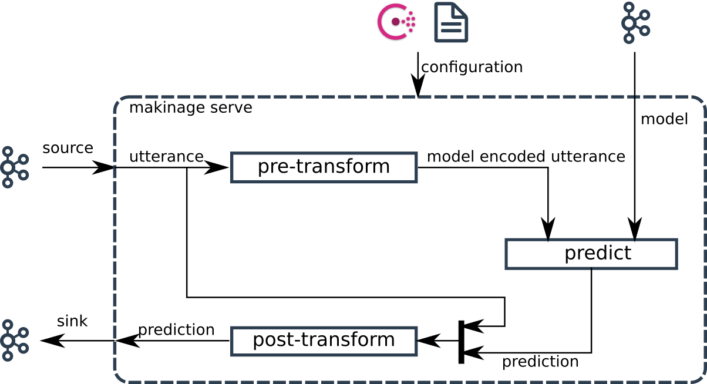

Model serving¶
Maki Nage provides an operator dedicated to model serving. This serve operator makes deployment of a machine learning model very easy. The key features of Maki Nage model serving are:
Real-time inference from a Kafka source topic.
Inference result is sent on a Kafka sink topic.
Automated model update.
Support of any machine learning model, packaged with MlFlow.
Customization of the whole inference pipeline: data pre/post-processing, and inference.
Data Flow¶
The following figure shows the dataflow of Maki Nage model serving:
{kind=link}
The data source is a Kafka topic. Each event then goes to three stages:
pre-transform: Each Kafka event is transformed in a format suitable for inference by the model.
predict: Model prediction is done for each pre-transformed event.
post-transform: Each prediction is transformed in a format sent back on Kafka.
Each step has a default behavior. So in some cases, no dedicated code is needed to deploy a model. Here is the default behavior of each step:
pre-transform: Create a NumPy array from the source event.
predict: Call the model predict method.
post-transform: Return a tuple (utterance, prediction).
Here is an example configuration file that can be used to serve a model where input and output data are encoded as JSON:
application:
name: my_model_serving
Kafka:
endpoint: "localhost"
topics:
- name: data
encoder: makinage.encoding.json
- name: model
encoder: makinage.encoding.none
start_from: last
- name: predict
encoder: makinage.encoding.json
operators:
serve:
factory: makinage.serve:serve
sources:
- model
- data
sinks:
- predict
config:
serve: {}
The service is started the same way as any Maki Nage application:
makinage --config config.serve.yaml
docker run makinage/makinage -v config.publish.yaml:/opt/makinage/config.yaml:ro
Once started the service waits for a model to be pushed on the model Kafka topic. This model can be pushed with makinage-model-publisher. This CLI tool also needs a configuration file:
application:
name: my_model_publisher
Kafka:
endpoint: "localhost"
models:
- topic: model
path: /.../model/model.zip
makinage-model-publisher --config config.publish.yaml
docker run makinage/model-publisher -v config.publish.yaml:/opt/makinage/config.yaml:ro
Custom Logic¶
Each of the three data flow steps can be customized for specific behavior. One has to write factory functions for each step that must be overloaded. these functions must be available as python packages and declared in the configuration:
application:
name: my_model_serving
Kafka:
endpoint: "localhost"
topics:
- name: data
encoder: makinage.encoding.json
- name: model
encoder: makinage.encoding.none
start_from: last
- name: predict
encoder: makinage.encoding.json
operators:
serve:
factory: makinage.serve:serve
sources:
- model
- data
sinks:
- predict
config:
serve:
pre_transform: my_model.serve:pre_transform
predict: my_model.serve:predict
post_transform: my_model.serve:post_transform
Note
These factories are called each time the configuration or the model change. Any update is taken into account without needing to restart the service.
pre-transform¶
Here is an example of a pre-transform overload:
def pre_transform(config):
field = config['config']['serve']['input_field']
def _transform(i):
return np.array(i[field])
return _transform
The pre-transform function is a factory function. It takes the configuration object as a parameter and returns the actual pre-transform function. The returned transform function is called for each event received on the input stream. If the transform function returns None, then the prediction is skipped. In this example, only one field of the input event is used and converted to a NumPy array.
predict¶
Here is an example of a predict overload:
def predict(model, config):
threshold = config['config']['serve']['threshold']
def _predict(i):
proba = model.predict_proba(i)
if proba >= threshold:
return True
return False
return _predict
The predict function is a factory function. It takes the model and configuration objects as parameters and returns the actual predict function. The returned predict function is called for each event received on the input stream. If the predict function returns None, then the prediction is skipped. In this example, the default behavior of predict is changed with a call of predic_proba. After that, a threshold is used to decide if the binary classification is true or false.
post-transform¶
Here is an example of a post-transform overload:
def post_transform(config):
def _transform(i, pred):
if pred is False:
return None
return (i, pred)
return _transform
The post-transform function is a factory function. It takes the configuration object as a parameter and returns the actual post-transform function. The returned transform function is called for each prediction from the model. If the predict transform returns None, then the prediction is skipped. In this example, the resulting prediction is skipped if the prediction is False. As a consequence, only True predictions are sent on the sink Kafka topic of the service.